Bài giảng 3D

Neuron và xung thần kinhXung nhảy cóc qua eo Ranvier, điện thế màng theo từng pha, synapse giải phóng chất dẫn truyền; phong cách điện ảnh.Sinh học · Lớp 11
Bài giảng
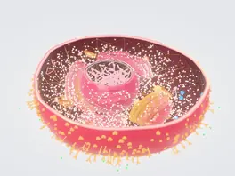
Hành Trình Vào Tế BàoTế bào nhân thực đang hoạt động; phóng liền mạch xuống 222.336 nguyên tử của ribosome thật.Sinh học · Lớp 10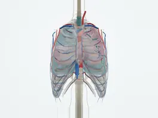
Cơ thể người 3D2.900 cấu trúc giải phẫu thật, 140 chuyển động sinh lí, 6 chủ đề hiển vi: tim đập, phổi thở, thận lọc máu.Khoa học tự nhiên · Lớp 8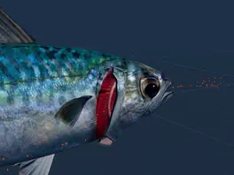
Cá thở bằng mangBơm miệng–nắp mang khi bơi chậm, ép dòng khi bơi nhanh; cá ngừ không được dừng; máu chảy ngược chiều nước lấy ≈ 75 % ô xi.Sinh học · Lớp 11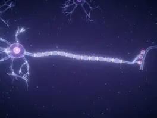
Neuron và xung thần kinhXung nhảy cóc qua eo Ranvier, điện thế màng theo từng pha, synapse giải phóng chất dẫn truyền; phong cách điện ảnh.Sinh học · Lớp 11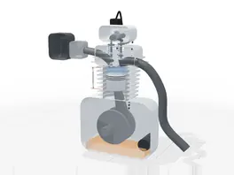
Động cơ xăng 4 kìCắt dọc động cơ theo thông số Honda Wave Alpha 110: bốn kì, xupap, trục cam, đồ thị p–V; thử tăng tỉ số nén, tắt bugi.Công nghệ · Lớp 11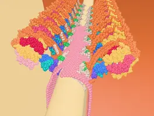
Vào Ty ThểDòng H⁺ làm vòng c quay, ba vị trí β lần lượt tạo ATP, dựng từ 37.733 nguyên tử thật.Sinh học · Lớp 10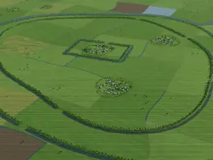
Thành Cổ LoaBa vòng thành đất theo số đo khảo cổ, dòng thời gian từ thế kỷ IV TCN đến nay.Lịch sử · Lớp 10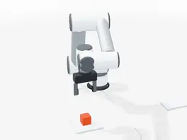
Cánh tay robot 6 trụcUR5e đúng bảng DH của hãng: động học nghịch 8 nghiệm, Jacobian, điểm kỳ dị.Robotics · Đại học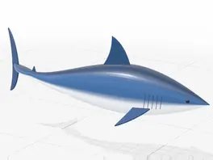
Robot cá mập makoBơi theo số đo cá mập thật: một đầu vào là tốc độ; tần số vẫy đuôi, sóng thân, số Strouhal, lực cản tăng theo v².Vật lí · Lớp 10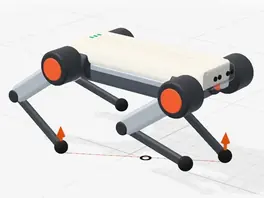
Chó robot bốn chânTheo số đo MIT Mini Cheetah: đi bước, đi kiệu, bật nhảy; lực đỡ từng chân, 12 mô men khớp, tách rời và lắp ráp.Robotics · Đại học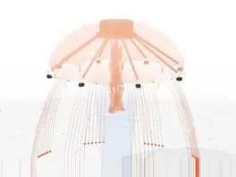
Sứa robotTheo Cyro của Virginia Tech: chuông co đẩy nước, phản lực và động lượng, rhopalia giữ thăng bằng, tế bào gai 700 ns.Robotics · Đại học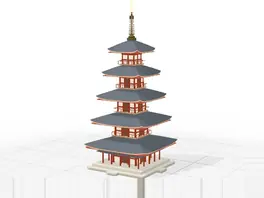
Tháp năm tầng Hōryū-jiDựng 52 thao tác theo tám giai đoạn, mặt cắt qua cột tâm; rung nền để thấy dao động riêng 1,1 s và cộng hưởng.Vật lí · Lớp 11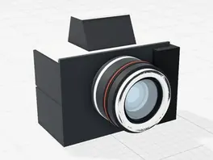
Máy ảnh cắt lớpỐng kính Canon 50 mm: ba tia tạo ảnh thật, ngược trên cảm biến; lấy nét là dời thấu kính; khẩu bảy lá; kiểm lại góc nhìn 40° của hãng.Khoa học tự nhiên · Lớp 9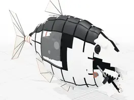
Cá piranhaCú cắn 320 N mạnh nhất từng đo ở cá: hàm dưới là đòn bẩy, F_cắn·d = F_cơ·L_in; răng trong cắn mạnh gấp ba răng ngoài.Vật lí · Lớp 10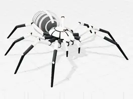
Nhện chân thuỷ lựcChân duỗi bằng áp suất như tarantula thật: một bơm, tám chân, cùng một áp suất (Pascal); τ = P·A·r, dáng chạy theo nhiệt độ.Vật lí · Lớp 10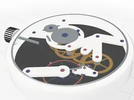
Đồng hồ cơETA 6497-1 theo tài liệu hãng: bánh lắc dao động điều hoà 2,5 Hz, bộ thoát 15 răng, tỉ số truyền bắt buộc; tháo từng bộ phận.Vật lí · Lớp 11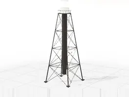
Hải đăng khung sắtSanibel 1884: lắp dựng khung giằng chéo, chớp đèn Fl(2) W 10s, tầm nhìn theo độ cong Trái Đất, gió và mô men lật.Vật lí · Lớp 1054 thí nghiệm theo bước
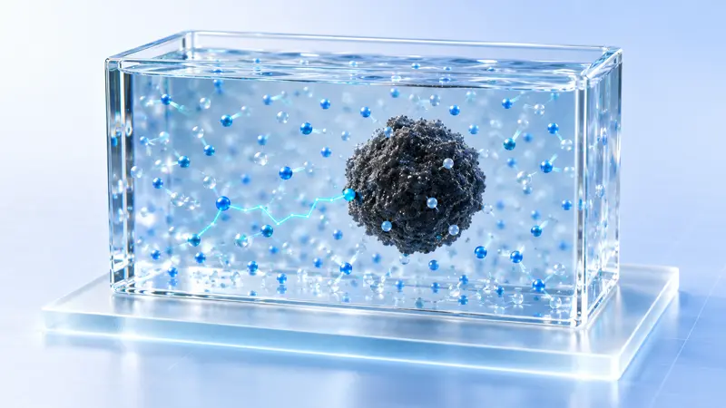
Chuyển động Brown và sự khuếch tánVật lí · 9 bước Chuẩn độ acid mạnh – base mạnhHoá học · 9 bước
Chuẩn độ acid mạnh – base mạnhHoá học · 9 bước
 Các điều kiện ảnh hưởng đến hoạt tính enzymeSinh học · 8 bước
Các điều kiện ảnh hưởng đến hoạt tính enzymeSinh học · 8 bước
 Biến đổi khí hậu toàn cầu và an ninh quốc giaĐịa lí · 8 bước
Biến đổi khí hậu toàn cầu và an ninh quốc giaĐịa lí · 8 bước
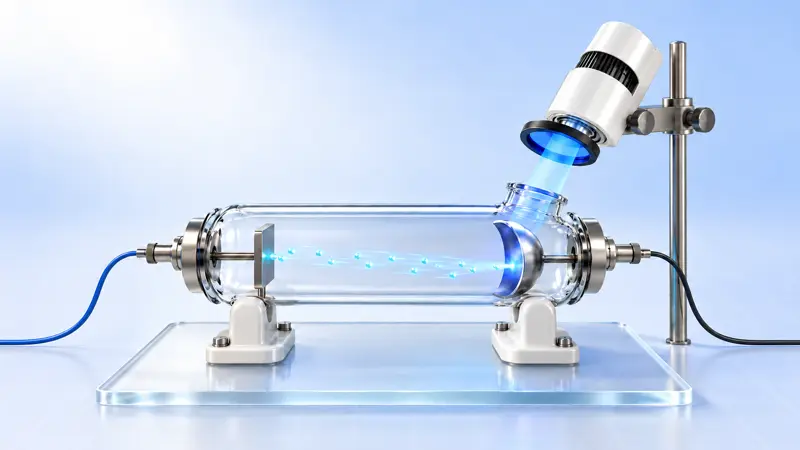
Hiện tượng quang điệnVật lí · 9 bước Các yếu tố ảnh hưởng đến tốc độ phản ứng hoá họcHoá học · 8 bước
Các yếu tố ảnh hưởng đến tốc độ phản ứng hoá họcHoá học · 8 bước
 Quan sát nguyên phân ở tế bào vùng mô phân sinh đầu rễSinh học · 9 bước
Chuyển động biểu kiến của Mặt Trời, các mùa và năm đớiĐịa lí · 9 bước
Quan sát nguyên phân ở tế bào vùng mô phân sinh đầu rễSinh học · 9 bước
Chuyển động biểu kiến của Mặt Trời, các mùa và năm đớiĐịa lí · 9 bước
 Quan sát sự tích điện và phóng điện của tụ điệnVật lí · 9 bước
Quan sát sự tích điện và phóng điện của tụ điệnVật lí · 9 bước
 Công nghiệp chlor–kiềmHoá học · 8 bước
Công nghiệp chlor–kiềmHoá học · 8 bước
 Sự hình thành và dẫn truyền xung thần kinhSinh học · 9 bước
Sự hình thành và dẫn truyền xung thần kinhSinh học · 9 bước
 Chuyển động ngang của khí quyển: gióĐịa lí · 8 bước
Chuyển động ngang của khí quyển: gióĐịa lí · 8 bước
 Thí nghiệm: Tìm hiểu mối liên hệ giữa gia tốc với lực và khối lượngVật lí · 8 bước
Thí nghiệm: Tìm hiểu mối liên hệ giữa gia tốc với lực và khối lượngVật lí · 8 bước
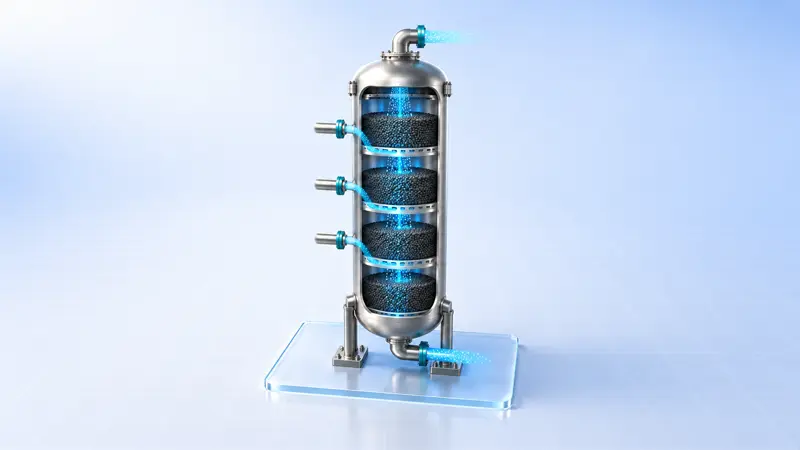
Công nghiệp tổng hợp ammoniaHoá học · 7 bước Sự hút nước và mất nước của tế bào thực vậtSinh học · 8 bước
Sự hút nước và mất nước của tế bào thực vậtSinh học · 8 bước
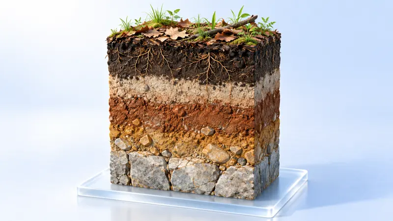
Các nhân tố hình thành đất chủ yếu và quan sát phẫu diện đấtĐịa lí · 8 bước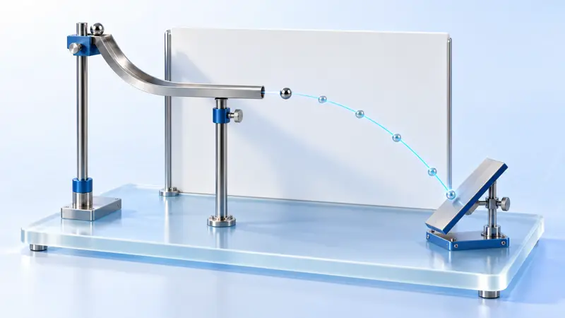
Thí nghiệm: Tìm hiểu đặc điểm của chuyển động ném ngangVật lí · 9 bước Khai thác bromine từ nước biển: phương pháp thổi khíHoá học · 7 bước
Khai thác bromine từ nước biển: phương pháp thổi khíHoá học · 7 bước
 Hoàn lưu nhiệt của khí quyểnĐịa lí · 9 bước
Hoàn lưu nhiệt của khí quyểnĐịa lí · 9 bước
 Thí nghiệm: kiểm chứng định luật bảo toàn cơ năngVật lí · 8 bước
Thí nghiệm: kiểm chứng định luật bảo toàn cơ năngVật lí · 8 bước
 Luyện gang trong lò caoHoá học · 8 bước
Luyện gang trong lò caoHoá học · 8 bước
 Hệ quả địa lí của chuyển động Trái ĐấtĐịa lí · 9 bước
Hệ quả địa lí của chuyển động Trái ĐấtĐịa lí · 9 bước
 Tìm hiểu mối liên hệ giữa độ lớn lực hướng tâm với bán kính, tốc độ góc và khối lượngVật lí · 8 bước
Tìm hiểu mối liên hệ giữa độ lớn lực hướng tâm với bán kính, tốc độ góc và khối lượngVật lí · 8 bước
 Luyện kim: điện phân muối nóng chảy + nhiệt nhômHoá học · 8 bước
Luyện kim: điện phân muối nóng chảy + nhiệt nhômHoá học · 8 bước
 Quy luật phân bố và ảnh hưởng của dòng biển trên thế giớiĐịa lí · 9 bước
Quy luật phân bố và ảnh hưởng của dòng biển trên thế giớiĐịa lí · 9 bước
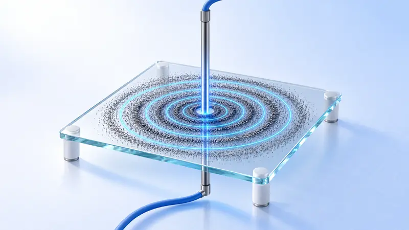
Từ trường của dòng điệnVật lí · 9 bước Lắp mô hình quả cầu – que để tìm hiểu cấu trúc phân tử hợp chất hữu cơHoá học · 9 bước
Lắp mô hình quả cầu – que để tìm hiểu cấu trúc phân tử hợp chất hữu cơHoá học · 9 bước
 Quá trình khí quyển nhận nhiệtĐịa lí · 9 bước
Quá trình khí quyển nhận nhiệtĐịa lí · 9 bước
 Tự cảm và dòng điện FoucaultVật lí · 9 bước
Tự cảm và dòng điện FoucaultVật lí · 9 bước
 Nguyên lí điện phân: điện phân dung dịch đồng(II) chloride và nước muối bão hoàHoá học · 9 bước
Nguyên lí điện phân: điện phân dung dịch đồng(II) chloride và nước muối bão hoàHoá học · 9 bước
 Quá trình và ý nghĩa địa lí của vòng tuần hoàn nướcĐịa lí · 9 bước
Quá trình và ý nghĩa địa lí của vòng tuần hoàn nướcĐịa lí · 9 bước
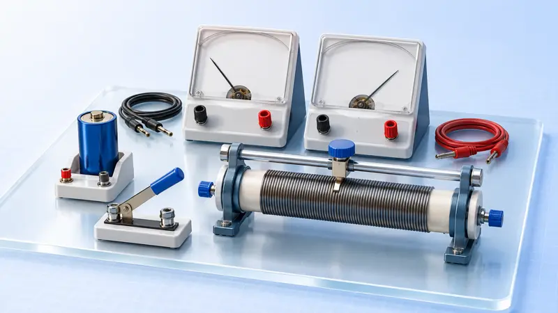
Đo suất điện động và điện trở trong của nguồn điệnVật lí · 9 bước Phương pháp Hầu sản xuất sodaHoá học · 8 bước
Phương pháp Hầu sản xuất sodaHoá học · 8 bước
 Sự hình thành và nhận biết địa hình karstĐịa lí · 7 bước
Sự hình thành và nhận biết địa hình karstĐịa lí · 7 bước
 Pin điện hoá: từ một dung dịch đến hai dung dịchHoá học · 9 bước
Pin điện hoá: từ một dung dịch đến hai dung dịchHoá học · 9 bước
 Sự hình thành địa hình kiến tạoĐịa lí · 6 bước
Sự hình thành địa hình kiến tạoĐịa lí · 6 bước
 Sản xuất sulfuric acid bằng phương pháp tiếp xúcHoá học · 7 bước
Sản xuất sulfuric acid bằng phương pháp tiếp xúcHoá học · 7 bước
 Sự phát triển của địa hình do sông tạo thànhĐịa lí · 8 bước
Sự phát triển của địa hình do sông tạo thànhĐịa lí · 8 bước
 Sản xuất xi măngHoá học · 8 bước
Sản xuất xi măngHoá học · 8 bước
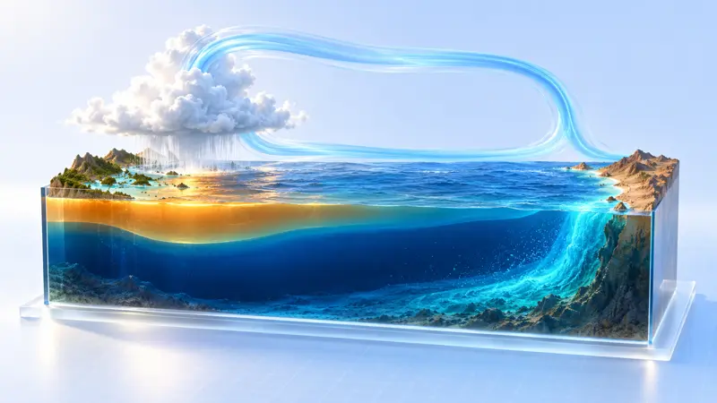
Tương tác biển – khí quyển, El Niño và La NiñaĐịa lí · 7 bước Sắt và hợp chất: chuyển hoá số oxi hoá của sắtHoá học · 9 bước
Sắt và hợp chất: chuyển hoá số oxi hoá của sắtHoá học · 9 bước
 Đai khí áp, đới gió và hoàn lưu ba vòngĐịa lí · 7 bước
Đai khí áp, đới gió và hoàn lưu ba vòngĐịa lí · 7 bước
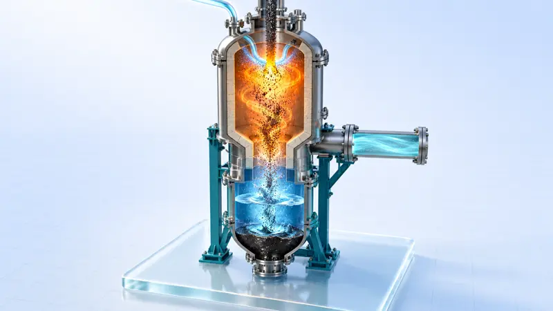
Sử dụng tổng hợp than: lấy khí hoá than làm mạch chínhHoá học · 8 bước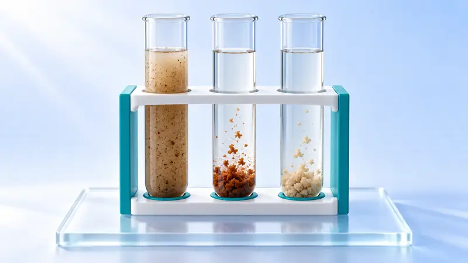
Sự thuỷ phân của muối và ứng dụngHoá học · 9 bước Sự điện li của chất điện li, tính dẫn điện của dung dịch và bản chất phản ứng ionHoá học · 9 bước
Sự điện li của chất điện li, tính dẫn điện của dung dịch và bản chất phản ứng ionHoá học · 9 bước
 Thử màu ngọn lửa và quang phổ nguyên tửHoá học · 8 bước
Thử màu ngọn lửa và quang phổ nguyên tửHoá học · 8 bước
 Tìm hiểu các yếu tố ảnh hưởng đến chuyển dịch cân bằng hoá họcHoá học · 9 bước
Tính chất của nitric acid đặc, loãng và sự chuyển hoá các oxide của nitrogenHoá học · 9 bước
Tìm hiểu các yếu tố ảnh hưởng đến chuyển dịch cân bằng hoá họcHoá học · 9 bước
Tính chất của nitric acid đặc, loãng và sự chuyển hoá các oxide của nitrogenHoá học · 9 bước
 Tính chất của sodium kim loại (kèm chữa cháy sodium)Hoá học · 9 bước
Tính chất của sodium kim loại (kèm chữa cháy sodium)Hoá học · 9 bước
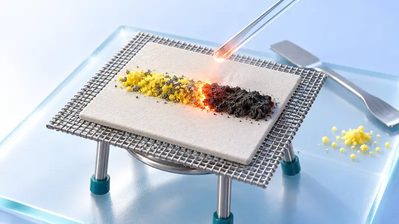
Tính chất của sulfur, sulfur dioxide, sulfuric acid đặc và chuyển hoá giữa các chất chứa sulfur có số oxi hoá khác nhauHoá học · 9 bước Ăn mòn hấp thụ oxygen và thiết kế miếng dán nhiệtHoá học · 9 bước
Ăn mòn hấp thụ oxygen và thiết kế miếng dán nhiệtHoá học · 9 bước
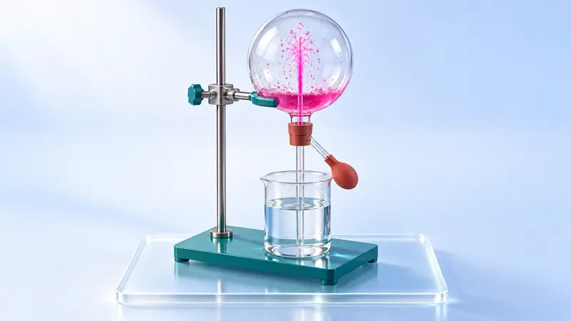
Điều chế và tính chất của ammonia (kèm thí nghiệm vòi phun)Hoá học · 9 bước Điều chế và tính chất của chlorineHoá học · 9 bước
Điều chế và tính chất của chlorineHoá học · 9 bước
Lộ trình theo chương trình
Cho giáo viên
Mở bài lên, dạy trọn một tiết.
Gói dạy thử 45 phút: kịch bản theo phút, phiếu học tập in A4, đáp án. Bản thử, chờ giáo viên bộ môn duyệt.
Xem các góiLên lớp trong mọi bàiBấm Lên lớp trên thanh đầu bài hoặc Shift P. Bút trình chiếu và phím mũi tên chuyển bước.
Điện thoại làm điều khiểnNhập mã trên màn chiếu để chuyển bước, xem ghi chú và đáp án.
Kiểm máy trước giờ dạyChạy thử mọi bài trên máy của lớp, biết bài nào nên dùng mức nhẹ.
Bản offlineTế Bào và Ty Thể, mỗi bài một tệp HTML, mở bằng Chrome hoặc Edge, không cần Internet.